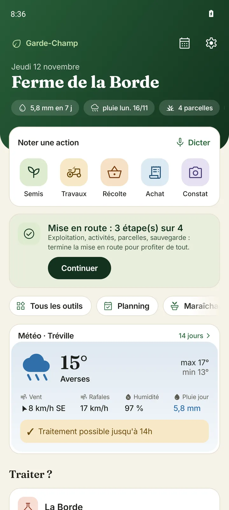
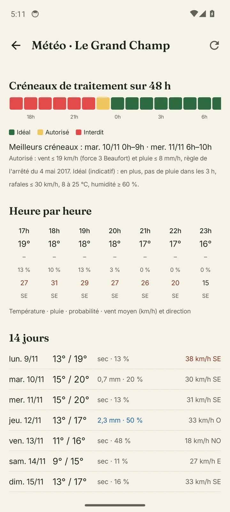
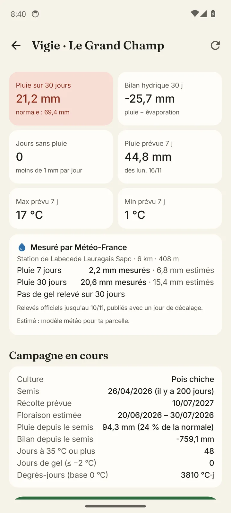
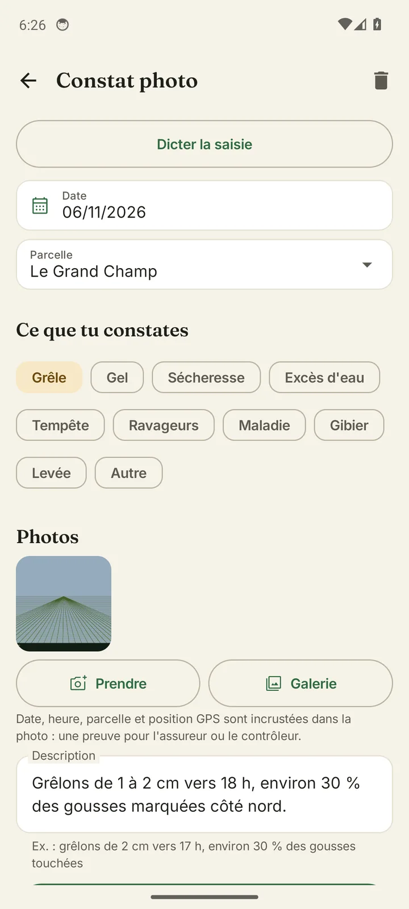
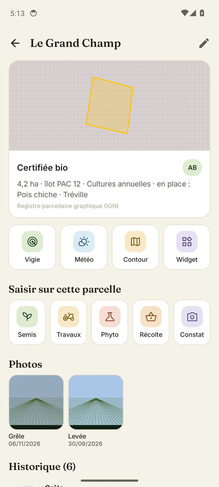
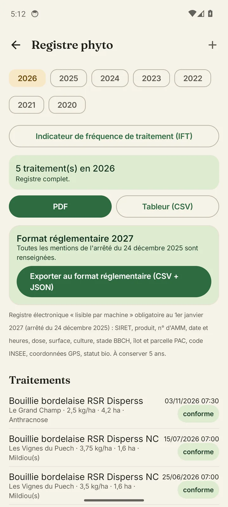
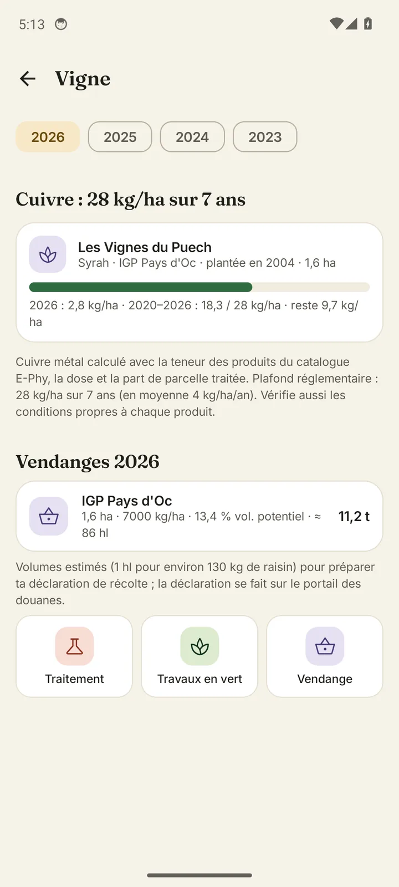
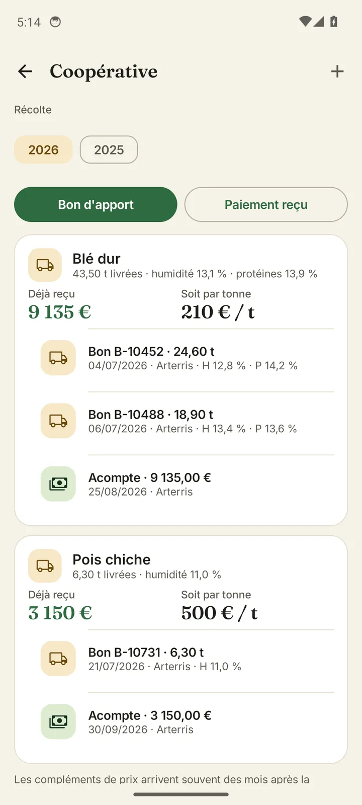
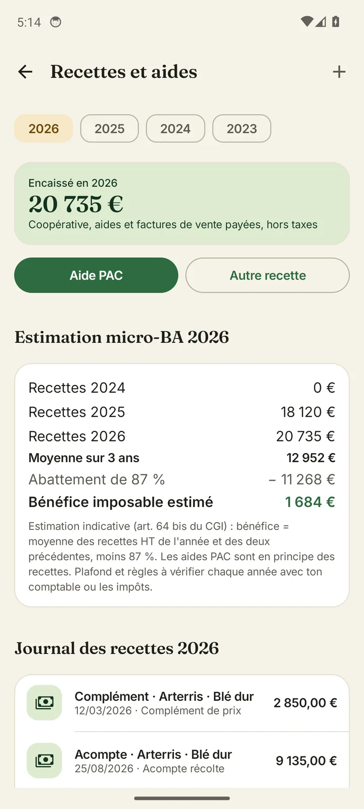

Cahier de culture · registre phyto · météo de traitement
Note une intervention en quinze secondes au bout du champ, sache quand tu as le droit de traiter, et sors ton registre ou ton dossier de contrôle bio en un PDF. Même sans réseau, et jusqu'aux paiements de la coopérative.
Disponible sur Google Play le 1er janvier 2027, avec 30 jours d'essai offerts. Écris-nous pour être prévenu.

Ce que fait Garde-Champ
La plupart des logiciels agricoles se remplissent le dimanche soir, devant l'ordinateur. Garde-Champ se remplit là où le travail se fait, avec de gros boutons, la dictée vocale et sans attendre le réseau.
Météo et traitements
Pour chaque parcelle, la Vigie croise les prévisions heure par heure avec les règles de l'arrêté du 4 mai 2017 : vent, pluie, rafales, température.


Saisie
Semis, travaux, traitement, récolte, achat ou simple constat : touche l'action, la parcelle et la date sont déjà remplies. Tu peux aussi dicter.


Réglementation
Le registre phytosanitaire se remplit au fil des saisies, avec le catalogue officiel E-Phy de l'Anses mis à jour chaque mois : numéro d'AMM, dose maximale, délai avant récolte, ZNT.


Exploitant en délégation
Beaucoup d'exploitants confient leurs travaux à une entreprise et livrent à la coopérative. Il leur reste la paperasse : registre, livraisons, paiements étalés, aides, papiers à renouveler. Garde-Champ la range pour toi.


Pour qui
Coche tes activités, l'appli n'affiche que ce qui te concerne. Ventes de miel, d'œufs ou de récoltes et charges de chaque atelier se retrouvent dans la même marge.
Tes données
Tout est enregistré sur le téléphone, réseau ou pas. La synchronisation est facultative : sans elle, rien ne quitte ton téléphone.
Avec la synchronisation, ta famille ou tes associés saisissent dans le même cahier. Il est hébergé à Paris et seuls les membres de ta ferme y ont accès.
Une copie chaque jour, et dans ton Google Drive si tu veux. Aucune publicité, aucune revente de données : l'appli vit de ses abonnements.
Tarifs
Toutes les fonctions sont offertes pendant 30 jours, sans carte bancaire. Ensuite, le cahier, le registre et la météo restent gratuits sur trois parcelles.
0 €
Sans limite de durée
149 € / an
ou 14,90 € par mois · pour l'agriculteur seul
299 € / an
ou 29,90 € par mois · pour la ferme à plusieurs
Prix TTC. Offre de lancement jusqu'au 31 mars 2027 : 119 € et 239 € la première année. Abonnement sans engagement, souscrit et résiliable depuis Google Play. Si tu arrêtes, tes données restent consultables et exportables.
Questions
Oui. Toutes les saisies, le registre et les PDF fonctionnent hors ligne. Seules la météo et la mise à jour du catalogue des produits ont besoin d'internet ; l'appli garde les dernières prévisions en mémoire.
Avec la synchronisation, tu te reconnectes sur le nouveau téléphone et tout revient. Sinon, active la sauvegarde Google Drive dans les réglages : tu récupères ton cahier en une minute.
Non. Garde-Champ t'aide à tenir tes enregistrements et à préparer tes contrôles. La certification reste délivrée par ton organisme, et tu restes responsable de tes déclarations.
Oui, avec la formule Pro : tu l'invites avec un code à 6 chiffres, il se connecte avec son compte Google, et vous remplissez le même cahier, chacun sur son téléphone. Les saisies faites sans réseau partent dès que la 4G revient. Ton conseiller peut aussi recevoir ton cahier en lecture seule.
Oui, avec la formule Pro. Tu l'invites avec un code depuis l'écran Synchronisation : elle voit tes parcelles et note ses interventions (produit, dose, date, conditions). Elle ne voit ni tes ventes, ni tes recettes, ni tes documents. Si elle travaille pour plusieurs agriculteurs, elle passe d'une exploitation à l'autre dans la même appli.
Non. C'est une estimation à partir des recettes que tu as notées (moyenne sur trois ans, abattement de 87 %) pour anticiper ton imposition. Les règles et plafonds évoluent : fais valider ta déclaration par ton comptable ou les impôts.
Garde-Champ est pour l'instant disponible sur Android. Écris-nous si tu attends la version iPhone : ça nous aide à la prioriser.
Oui, en deux touches depuis Google Play. Tu repasses en formule gratuite et tu gardes toutes tes données.
Contact
Garde-Champ se construit avec des agriculteurs. Écris-nous pour être prévenu du lancement ou pour rejoindre les testeurs.
contact@garde-champ.fr